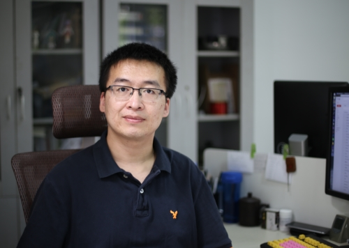

欢迎来到耿光超的个人主页！
耿光超，男，生于1985年12月，吉林省吉林市人。
2005年毕业于吉林省吉林市第一中学，保送进入浙江大学竺可桢学院混合班，开始本科基础课学习。2007年进入浙江大学电气工程学院电气工程及其自动化专业开始本科专业课学习，并以本科生身份加入浙江大学电力系统高性能计算实验室。2009年完成相关专业课程计划和混合班培养计划，获得工学学士学位和竺可桢荣誉证书。2009年8月至2014年6月于浙江大学电气工程学院师从江全元教授攻读工学博士学位，专业为电力系统及其自动化，于2014年6月获得工学博士学位。攻读博士期间，受国家留学基金管理委员会“国家建设高水平大学公派研究生项目（联合培养博士研究生）”资助，于2012年8月至2013年11月赴美国爱荷华州立大学访问学习，在V.Ajjarapu教授的指导下开展稳定约束最优潮流方面的研究。
2014年7月博士毕业后，在浙江大学控制科学与工程学院从事博士后研究，合作导师为孙优贤院士。2015年11月起，受中国博士后科学基金博士后国际交流计划派出项目资助，在加拿大阿尔伯塔大学电气与计算机工程学系从事博士后研究，合作导师为Wilsun Xu教授。
主要研究方向包括：电力系统稳定与控制、电力系统运行分析、电力系统测量、高性能数值分析与优化。
联系方式: W1-028 D5n, ECERF, University of Alberta, 9107 116 St NW, Edmonton, AB T6G 2V4, Canada.
Email: ggc[at]zju[dot]edu[dot]cn
WWW: www.genggc.org